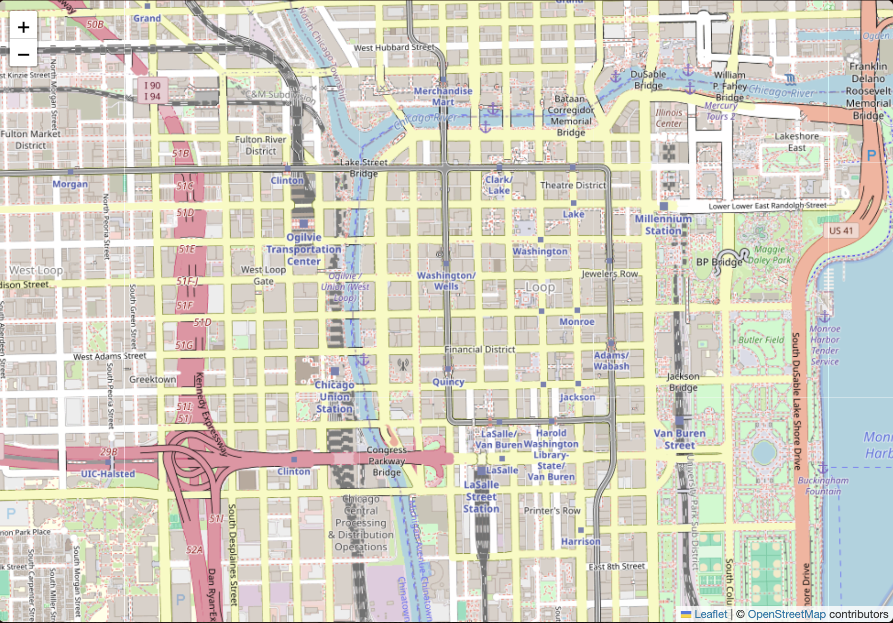
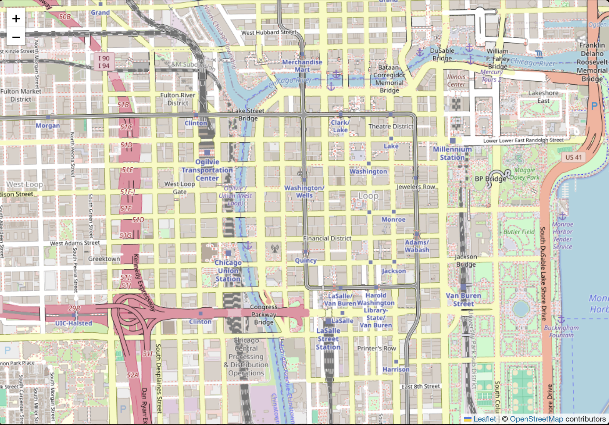

The Past Revealed
 


The Court House Shortly Before the Fire; Lovejoy & Foster, Stereograph, 1871 (ichi-64281)
More information about the Court House before and after
First link
Second link
Your first letter from Jonas Hutchinson, click on it to add to your collection
Open PDF